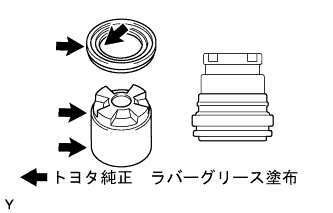
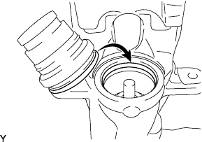
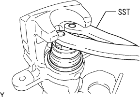
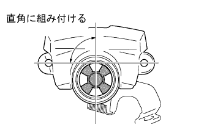
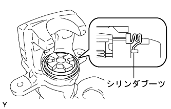

Rear Brake Reassembly |
| 1. Temporarily Tighten Rear Disc Brake Bleeder Plug |
| 2. Install Rear Disc Brake Bleeder Plug Cap |
| 3. Install Piston Seal |
Apply rubber grease to the entire circumference of a new piston seal, and install it into the groove of the disc brake cylinder.
| 4. Install Cylinder Boot |
Apply a thin coat of rubber grease to the outer circumference of the disc brake piston.
 |
Apply rubber grease to a new cylinder boot, and install it to the disc brake piston as shown in the illustration.
| 5. Install Rear Disc Brake Piston |
 |
Install the seal part of the cylinder boot into the groove of the disc brake cylinder.
 |
Using SST, turn the piston clockwise and screw it in all the way.
 |
Using SST, slowly turn the piston counterclockwise so that the piston groove is in the position shown in the illustration.
 |
Check that the cylinder boot is securely installed in the grooves of the disc brake cylinder and disc brake piston.